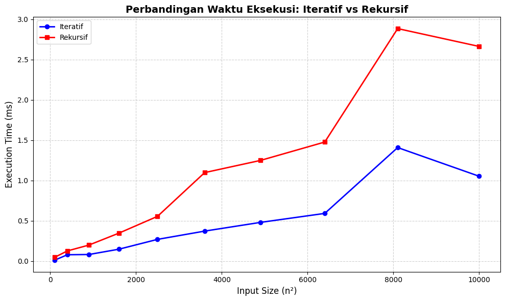

Pada rentang input kecil (n = 10 sampai 100), perbedaan waktu eksekusi
antara metode iteratif dan rekursif tidak terlihat secara signifikan.

Pada rentang menengah (n = 100 sampai 10000), metode iteratif mulai menunjukkan
efisiensi yang lebih stabil dibandingkan rekursif yang memakan tumpukan memori.